layout: true class: slides-chapter, theme-whiskey --- <img src="./assets/slide-1.svg" width="1200" style="position: absolute; top: 0; left: 0;"> --- layout: true class: theme-whiskey --- <img src="./assets/slide-2.svg" width="1200" style="position: absolute; top: 0; left: 0;"> --- <img src="./assets/slide-3.svg" width="1200" style="position: absolute; top: 0; left: 0;"> --- <img src="./assets/slide-4.svg" width="1200" style="position: absolute; top: 0; left: 0;"> --- layout: true class: theme-whiskey, slides-centered --- <img src="./assets/peerigon-logo.png" width="500"> --- <img src="./assets/webpack-logo.svg" width="600"> --- layout: true class: slides-chapter, theme-spinach --- <div style="position: fixed; top: 0; left: 0; right: 0; bottom: 0; background: url(assets/slide-5.svg) no-repeat; background-size: cover; background-position: center center; margin: 0;"></div> ## Journey<br>preparations --- layout: true class: theme-whiskey, slides-centered --- ### What's Universal JavaScript? --- <div style="position: fixed; top: 0; left: 0; right: 0; bottom: 0; background: url(assets/iss.jpg) no-repeat; background-size: cover; background-position: center center; margin: 0;"></div> ??? - Does it mean that it's supposed to run on the ISS? --- The term is used to describe a special type of **web application**. --- It means that the application code is written in a way that it can be executed<br> **both on the server and on the client**. --- ### How does it work? --- The server renders the **initial HTML** and sends it to the browser. --- The browser **displays the initial HTML**. --- Simultaneously, it also **downloads the single-page app** (SPA) in the background. --- Once the client-side code is ready, the client takes over and **the website becomes a SPA**. --- This is called (re-)hydration. --- ### Why would we want to do that? --- layout: true class: slides-chapter, theme-spinach --- ## Reason № 1:<br>Performance --- layout: true class: slides-centered, theme-whiskey --- .slides-content[ - With server-side rendering, the first meaningful paint happens sooner - We're leveraging one of HTML's strengths: progressive rendering - Browsers are incredibly good at rendering partial content - With SPAs, we throw all of these builtin performance optimizations away ] --- layout: true class: slides-chapter, theme-spinach --- ## Reason № 2:<br>SEO --- layout: true class: slides-centered, theme-whiskey --- .slides-content[ - Search engine crawlers used to not execute scripts - Nowadays, they execute initial scripts - But they usually stop after a while (roughly 10 seconds) - SPAs can't set meaningful HTTP status codes ] .slides-footnote[ Source: Kazushi Nagayama, [Deprecating our AJAX crawling scheme](https://webmasters.googleblog.com/2015/10/deprecating-our-ajax-crawling-scheme.html)<br> Source: Andrew Farmer, [Will Google find your React content?](https://www.javascriptstuff.com/react-seo/)<br> Source: Patrick Hund, [Testing a React-driven website’s SEO using “Fetch as Google”](https://medium.freecodecamp.org/using-fetch-as-google-for-seo-experiments-with-react-driven-websites-914e0fc3ab1) ] --- layout: true class: slides-chapter, theme-spinach --- ## Reason № 3:<br>Error resilience --- layout: true class: slides-centered, theme-whiskey --- **The website stays usable**<br>even if scripts weren't loaded, blocked or failed in some other way. --- 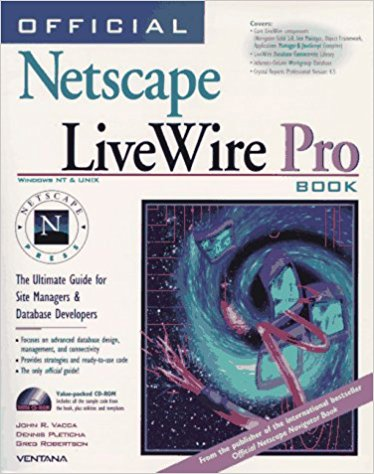 ??? - Back in 1995, Netscape also released a server-side JavaScript implementation which they called LiveWire --- 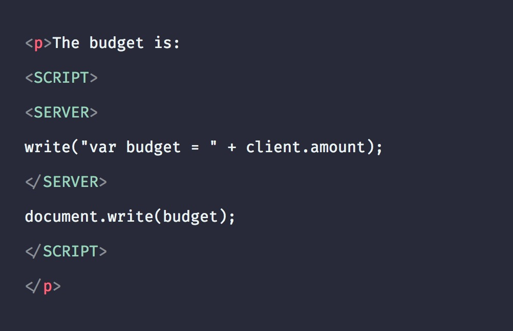 ??? - You could add server tags which were executed on the server - But the idea didn't really take off --- <img src="assets/livewire-review.jpg" style="width: 800px;"> ??? - I came across this particular review from a developer in 1998 - "I spent 18 months doing LiveWire development and it's pretty lame. I hit the wall of scripting languages' limitations quickly and even though LiveWire in Enterprise Server 3 added a lot of stuff, it still sucks. For this reason I have dedicated a whole page on my personal site to describing why LiveWire sucks" --- Universal JavaScript can be **very challenging**. ??? - Universal JavaScript can be very challenging - I decided to show you some of the pitfalls --- layout: true class: slides-chapter, theme-spinach --- <div style="position: fixed; top: 0; left: 0; right: 0; bottom: 0; background: url(assets/slide-5.svg) no-repeat; background-size: cover; background-position: center center; margin: 0;"></div> ## Let's start the journey ??? - How do you build a universal web application? --- layout: true class: slides-centered, theme-whiskey --- ### From SPA to Universal <img src="assets/url-qr-code.jpg" width="300"> The full journey is available at:<br> [https://github.com/jhnns/bumpy-road-to-universal-javascript](https://github.com/jhnns/bumpy-road-to-universal-javascript) ??? - I'm going to explain typical challenges of universal applications by transforming a single-page app to a universal app - But I had to skip some parts because it wouldn't fit into the schedule - The full journey is available at https://github.com/jhnns/bumpy-road-to-universal-javascript - Of course, there are multiple solutions for the problems presented here - The following solutions are just my recommendation - Please note: You won't be able to measure a big performance difference between the SPA and the universal app in my example project because the JavaScript bundle is too small - The positive effects becomes obvious with bigger bundles and on weak CPUs --- <video src="assets/spa-demo.mp4" controls loop width="640" height="424"></video> ??? - Our current single-page app is a an app that displays a random fox image - It fetches the URL for the random image from a remote API --- <img src="assets/webpack-logo.svg" width="450" style="display: inline-block; position: relative; top: 30px; margin-left: -70px;"> <img src="assets/babel-logo.png" width="250" style="display: inline-block; margin-left: -20px;"> <img src="assets/react-logo.svg" width="150" style="display: inline-block; position: relative; top: -20px;"> ??? - The tech stack is React, webpack and babel - But that doesn't really matter. You can apply the learnings to different tech stacks as well --- <img src="assets/spa-server.jpg" width="800"> ??? - The app has an express server --- 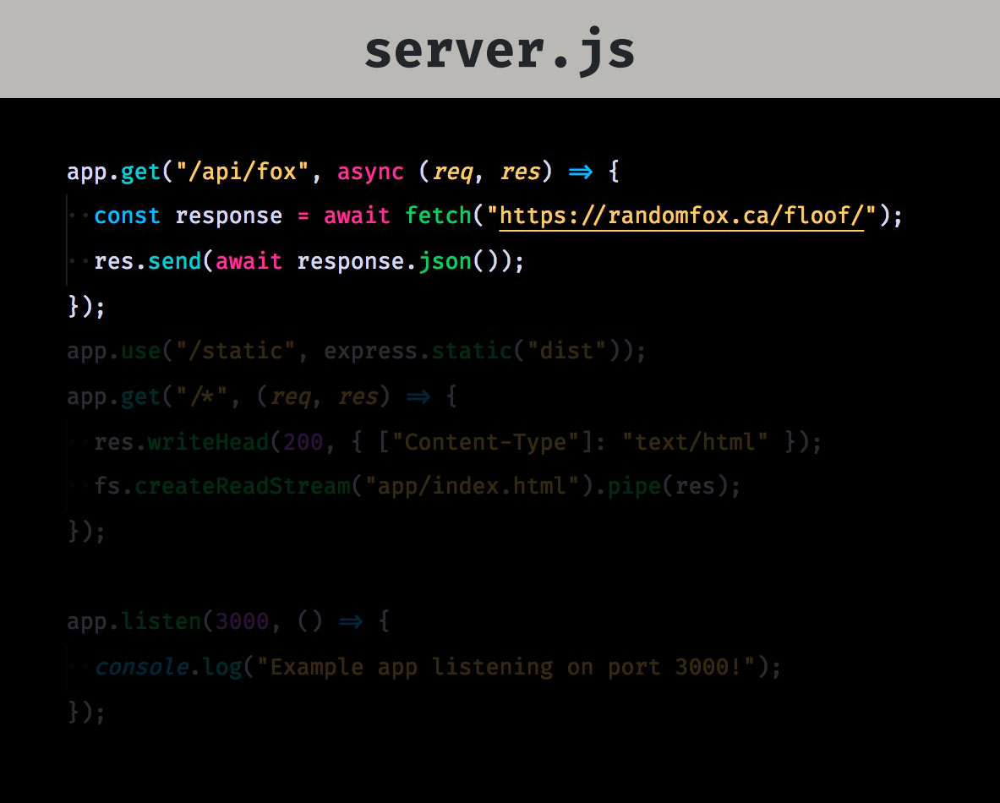 ??? - The server handles API requests for the random fox image because we can't just make a request to a different origin from the client --- <img src="assets/spa-server-index-html.jpg" width="800"> ??? - The server serves the empty HTML that is typical for a SPA --- <img src="assets/spa-app.jpg" width="800"> ??? - There is a single App component which renders the application --- <img src="assets/spa-app-will-mount.jpg" width="800"> ??? - Once the application is mounted into the DOM, the client requests the image from our express server - Which proxies it to the remote API --- <img src="assets/spa-app-render.jpg" width="800"> ??? - As long as the API call is pending, we display a loading message --- <img src="assets/spa-start.jpg" width="800"> ??? - Inside start.js we call ReactDOM.render() with the application --- layout: true class: slides-chapter, theme-spinach --- ## Challenge № 1:<br>The node-browser gap --- layout: true class: slides-centered, theme-whiskey --- .slides-columns[ .col[ <img src="assets/nodejs-logo.jpg" height="100" style="margin-right: 100px"> - CommonJS (CJS) - Core modules ] .col[ <img src="assets/browser-logos.jpg" height="100"> - ECMAScript modules (ESM) - No core modules ] ] ??? - node and browsers are inherently different platforms - In node, we have CommonJS and core modules like the fs module for instance - In browsers, we have the ECMAScript module system and no core modules --- .slides-content[ ### The good news Both platforms are getting more and more similar. ] --- <img src="assets/parse-domain-example.jpg" width="800" /> ESMs and the `URL` constructor, for instance, will soon be available on both platforms. ??? - We get ECMAScript modules into node - Useful, standardized APIs, like the URL constructor, are being implemented for both platforms --- .slides-content[ ### The bad news We're not there yet. ] --- 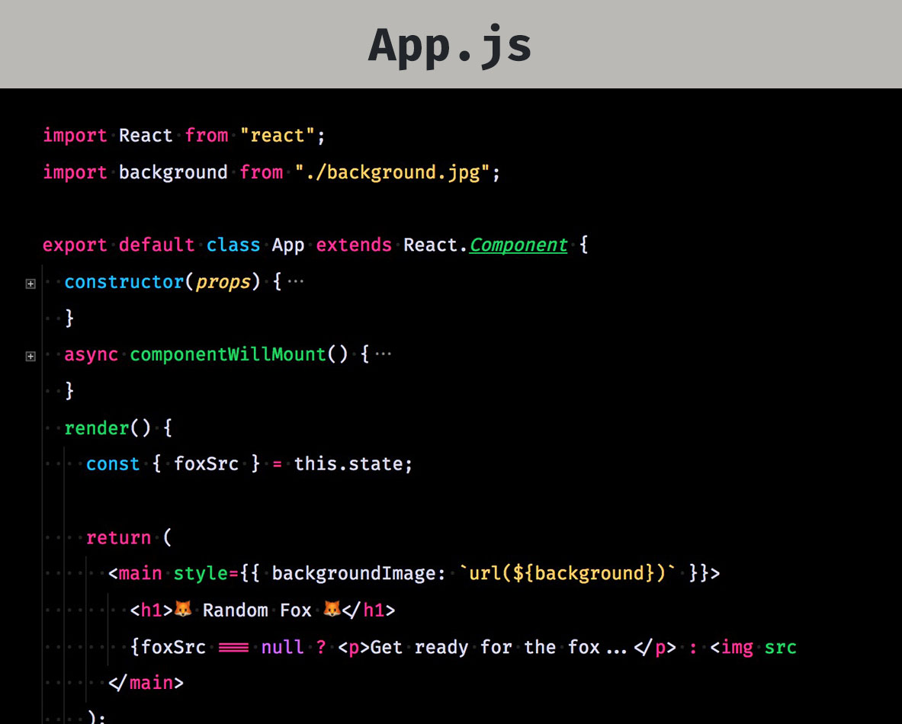 ??? - In fact, our App component is neither executable in the browser nor in node --- <img src="assets/app-problem-import.jpg" width="800" /> ??? - Although ECMAScript modules are soon available for both platforms, bare import specifiers are not yet standardized - Bare import specifier are the ones you use to import stuff from node_modules - And importing images like that is supported nowhere - There was some specification efforts on a loader spec, but things are still in flux --- <img src="assets/app-problem-jsx.jpg" width="800" /> ??? - Custom syntax like JSX or vue-files makes developing web applications easier - But now we need a build tool to translate these languages --- ### ☝️ Solution --- Use a bundler to **streamline the module system and platform environment**.<br> Create a bundle for both the browser and for node. --- <img src="assets/webpack-config-array.jpg" width="800" /> ??? - With webpack, you can also return an array of configs - This switches webpack into the multi-compiler mode --- 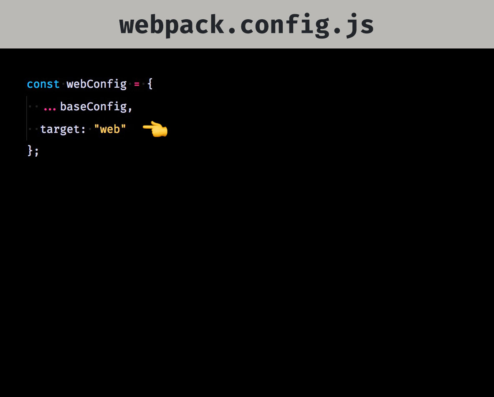 ??? - Create one config for the browser with target "web" --- <img src="assets/webpack-config-node.jpg" width="800" /> ??? - Create one config for node with target "node" - Use "commonjs2" as library target to make the bundle requireable in node - Use the externals option to skip dependencies in node_modules - You can use the webpack-node-externals package on npm to simplify that --- Use or write **isomorphic modules**.<br> --- <img src="assets/isomorphic-fetch-on-npm.jpg" width="1000" /> ??? - Isomorphic modules are modules that expose the same public API, but different implementations under the hood - Example: isomorphic fetch --- <img src="assets/isomorphic-fetch-package-json.jpg" width="1000" /> ??? - These modules have different entrypoints depending on the environment - main for node and browser for... the browser --- layout: true class: slides-chapter, theme-spinach --- ## Challenge № 2:<br>The client-server gap --- layout: true class: slides-centered, theme-whiskey --- .slides-columns[ <div style="text-align: center; margin-right: 150px;"> <span style="font-size: 150px;">👩💻</span><br> <b>Client</b><br> One user </div> <div style="text-align: center; margin-left: 150px;"> <span style="font-size: 150px;">🤹♀️</span><br> <b>Server</b><br> Multiple users </div> ] ??? - The client is a single-user environment - The server is a multi-user environment - The server serves multiple users at the same time - There is also another difference between the client and the server --- .slides-columns[ <div style="text-align: center; margin-right: 150px;"> <span style="font-size: 2em">👩💻</span><br> <b>Client</b><br> Updates DOM<br> <span style="font-size: 150px;">🌲</span> </div> <div style="text-align: center; margin-left: 150px;"> <span style="font-size: 2em">🤹♀️</span><br> <b>Server</b><br> Sends HTML<br> <span style="font-size: 150px;">📝</span> </div> ] ??? - The result of a client render is an update of the DOM tree - The result of a server render is an HTML string --- ### ☝️ Solution ??? - The solution for these two problems --- .slides-content[ Keep the process stateless.<br> Maintain the application state for each request. **Design the app in a way that it can be used by multiple users at the same time.** ] ??? - Keep the process stateless - Maintain the application state for each request - Design the app in a way that it can be used by multiple users at the same time --- .slides-columns[ <div style="text-align: center; margin-right: 50px;"> <span style="font-size: 2em">👩💻</span><br> <b>Client</b><br> <span style="font-size: 150px;">🚪</span> </div> <div style="text-align: center; margin-left: 50px;"> <span style="font-size: 2em">🤹♀️</span><br> <b>Server</b><br> <span style="font-size: 150px;">🚪</span> </div> ] Create **two app entries**,<br> a client entry and a server entry. ??? - Create two app entries, one for the client and one for the server - This is where you can add platform-dependent and environment-dependent code --- <img src="assets/two-entries-server.jpg" width="800" /> ??? - In our case, we split up start.js into start.server.js and start.client.js - start.server.js exports a function that renders the application to a string --- <img src="assets/two-entries-index-js.jpg" width="800" /> ??? - Instead of a simple index.html we now got a index.html.js with a template string --- <img src="assets/two-entries-index-js-require.jpg" width="800" /> ??? - Which requires the server bundle --- <img src="assets/two-entries-index-js-app.jpg" width="800" /> ??? - And embeds the rendered app into the index.html template --- 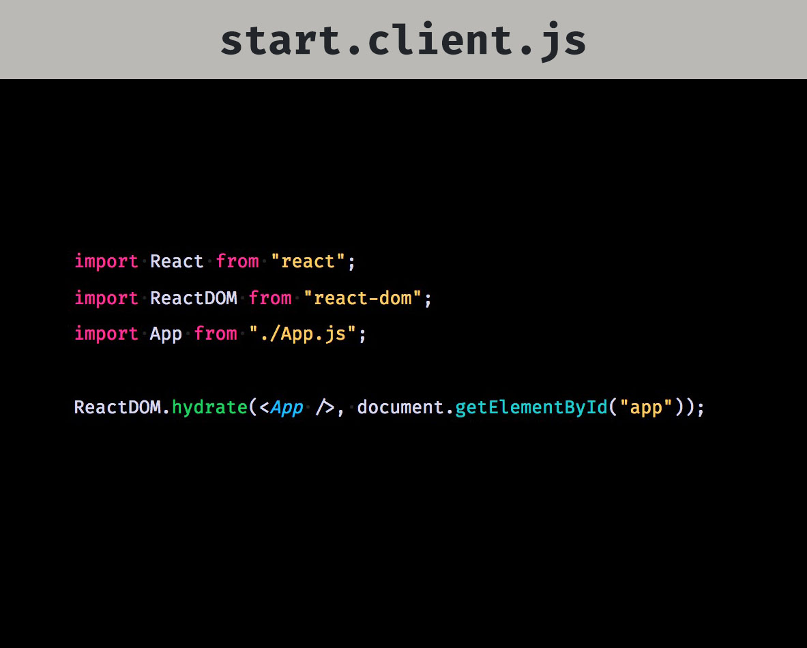 ??? - start.client.js rehydrates the application from the given HTML - Update your webpack config accordingly --- layout: true class: slides-chapter, theme-spinach --- ## Challenge № 3:<br>Data fetching --- layout: true class: slides-centered, theme-whiskey --- **Data fetching** needs to be executable<br> on both the client and the server. ??? - Data fetching needs to be executable on both the client and the server. --- ### Why? --- <div style="font-size: 50px"> <span style="margin-left: 1em">🤹♀️</span> <span style="margin-left: 2em">👩💻</span> <span style="margin-left: 2em">👩💻</span> <span style="margin-left: 2em">👩💻</span> <br> <span style="margin-left: -2em">💬</span> <span style="margin-left: 2em">💬</span> <span style="margin-left: 2em">💬</span> <span style="margin-left: 2em">💬</span> </div> - The **initial request** will be handled on the server - **Subsequent requests** (navigation events) will be handled on the client - The initial request can be any route ??? - The initial request will be handled on the server - Subsequent requests (navigation events) will be handled on the client - The initial request can be any route --- ### How? --- - E.g. use [`node-fetch`](https://www.npmjs.com/package/node-fetch) to make the `fetch()` API available in node - Cross-origin requests may need to be proxied via your API - Use absolute URLs to fetch data from your own API ??? - For instance use node-fetch on the server - Cross-origin requests may need to be proxied via your API - Use absolute URLs to fetch data from your own API --- --- .slides-content[ **Yes.** Your server may end up doing an HTTP request against itself. But that's fine, really. ] .slides-footnote[ If you're using GraphQL, you could use the [SchemaLink](https://www.apollographql.com/docs/link/links/schema.html) instead of the HttpLink. ] ??? - Yes, your server may end up doing an HTTP request against itself - But that's fine, because you may decide to separate the data API and the HTML server later - GraphQL provides a way to circumvent that --- ### There's another problem ??? - But there's another problem --- <img src="assets/loading-state-html.jpg" width="800" /> ??? - If we'd execute the current state of the app, we would get the following HTML from the server --- <img src="assets/spa-app-will-mount.jpg" width="800" /> ??? - This is because we're fetching the data on componentDidMount() - But rendering is synchronous (at least for now) - When the server sends out the HTML, the app is still fetching --- ### ☝️ Solution --- **Multiple** render passes? ??? - We could call render multiple times until all componentDidMount() hooks fired - But that feels kind of hacky - We would also need to define a maximum number of rendering passes --- **Better:** Separate data fetching from rendering ??? - Separate data fetching from rendering --- 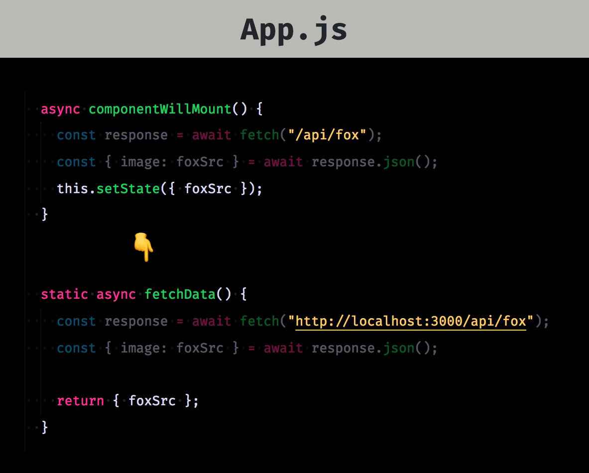 ??? - Make it a static function - Return props instead of calling setState() - This is similar to what Next.js is doing with getInitialProps() --- 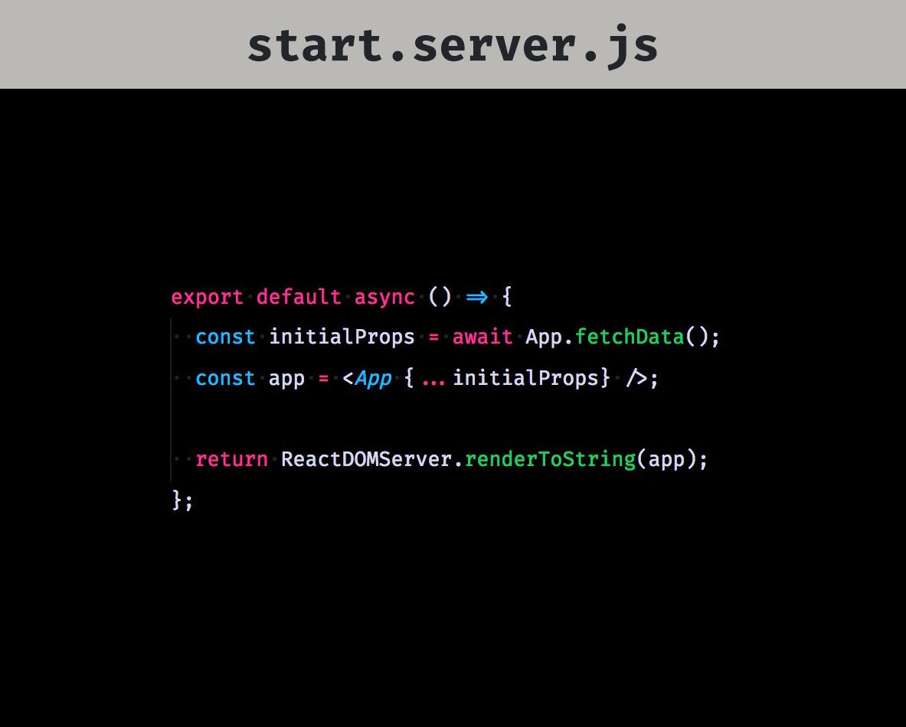 ??? - Call the static function, await the result and render --- <img src="assets/actual-ssr.jpg" width="800" /> ??? - Now the server renders the final HTML - Which brings us to the next Challenge --- layout: true class: slides-chapter, theme-spinach --- ## Challenge № 5:<br>State dehydration<br>and rehydration --- layout: true class: slides-centered, theme-whiskey --- 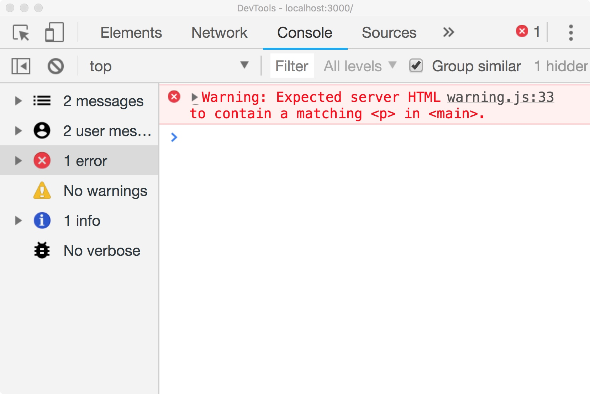 ??? - With the current app, the client would show us a warning --- <img src="assets/ssr-vs-csr.jpg" width="800" /> ??? - It is caused by the fact that the client is rehydrating the app with different props - We somehow need to make the props from the server available to the client --- 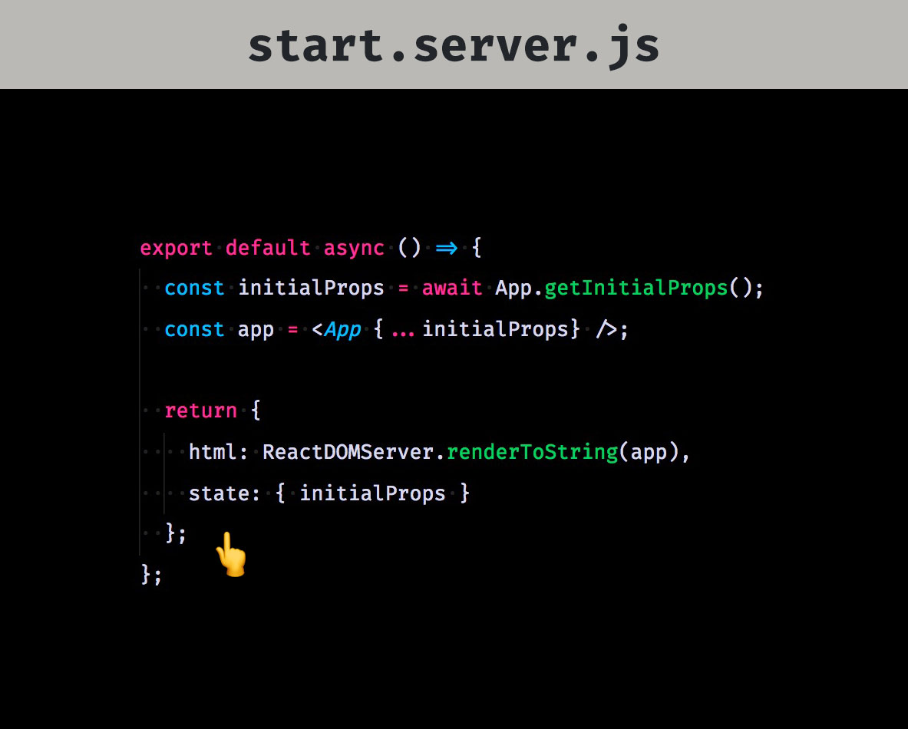 ??? - So we refactor the start.server.js to return the HTML and the state --- <img src="assets/state-index-js-xss.jpg" width="800" /> ??? - And embed the stringified application state into the initial HTML --- layout: true class: slides-chapter, theme-danger --- ## 🚨 XSS ALARM 🚨 ??? - But now we have a a cross-site scripting vulnerability --- layout: true class: slides-centered, theme-whiskey --- <img src="assets/xss.jpg" width="800" /> ??? - The state may contain user data - If the user data contains HTML, the browser will interpret it --- <img src="assets/xss-exec.jpg" width="800" /> --- <img src="assets/state-index-js-safe.jpg" width="800" /> ??? - Replacing opening brackets with their unicode counterpart prevents this kind of attack --- <img src="assets/state-start-client.jpg" width="800" /> ??? - On the client-side, we can re-use the preloaded state to hydrate the app with the same state as on the server --- <div style="position: fixed; top: 0; left: 0; right: 0; bottom: 0; margin: 0; background: white;"></div> <div style="position: fixed; top: 0; left: 0; right: 0; bottom: 0; background: url(assets/dark-valley.jpg) white no-repeat; background-size: contain; background-position: center center; margin: 30px;"></div> <div style="position: fixed; top: 50%; transform: translateY(-50%)"> <h1 style="color: white">Challenge № 6:<br>The uncanny valley</h1> </div> --- .slides-content[ ### The uncanny valley in server-rendered apps When the website looks usable, but does not respond to user interactions. ] ??? - The term was originally coined to describe the feeling of unease people get when a robot tries to resemble humans too closely - With server-rendered apps, the uncanny valley describes the time span during the website looks usable, but does not respond to user interactions --- <img src="assets/uncanny-valley.jpg" width="500"> **Typically caused by:** - Big JS response size - Big JS parse size .slides-footnote[ Source: Paul Lewis, [When everything's important, nothing is!](https://aerotwist.com/blog/when-everything-is-important-nothing-is/) ] ??? - Paul Lewis created a good infographic to describe the problem - When the HTML arrives but JavaScript onclick handlers are not installed yet - This is typically caused by big JS repsonse and parse size - Big response size meaning that the HTTP response took too long to transfer - Big parse size meaning that the decompressed source code took too long to parse --- ### ☝️ Solution --- `npm rm ...` `import(...)` `<a href="...">` .slides-footnote[ 1. Replace unnecessarily big dependencies 2. Delay dependencies that are not immediately required 3. Use `<a>` tags instead of click handlers ] ??? - Replace unnecessarily big dependencies - Delay dependencies that are not immediately required - Use anchor tags instead of click handlers --- .slides-content[ ### The goal While the scripts are being loaded and parsed,<br> our web application **should already be usable.** ] ??? - While the scripts are loading and being parsed, our web application should already be usable --- Consequently,<br> **every meaningful UI state should have a URL.** ??? - However, this requires that every meaningful UI state has a URL --- ??? - For instance, if you want to open a modal, use a URL with a query parameter --- .slides-content[ **This allows the server to fill in<br> for the client when it's not ready yet.** There are also other advantages: - The back button just works - Open in new tab just works - Better accessibility ] ??? - This allows the server to fill in for the client when it's not ready yet - There are also other advantages: - The back button just works - Open in new tab just works - Better accessibility --- 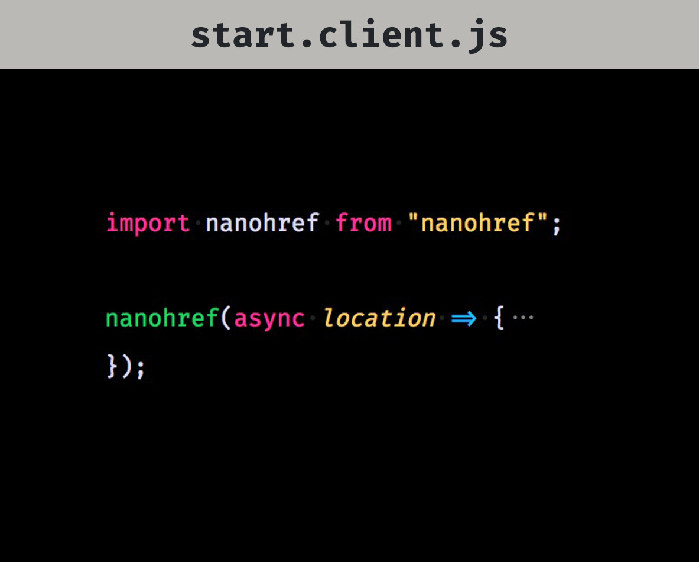 .slides-footnote[ [`nanohref`](https://www.npmjs.com/package/nanohref) captures `<a>` clicks reliably ] --- layout: true class: slides-chapter, theme-spinach --- ## Challenge № 7:<br>Response streaming --- layout: true class: slides-centered, theme-whiskey --- 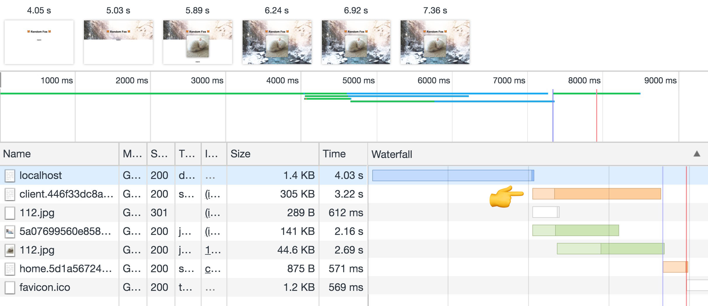 ??? - As long as we're waiting for the data to be loaded, we keep the client pending - I've delayed the response time artificially to demonstrate the effect - We could already send some static parts of the document head --- ### ☝️ Solution --- Write the server entry in a way that allows you to<br> send out parts of the document **as soon as they are final.** ??? - Write the server entry in a way that allows you to send out parts of the document as soon as they are final --- <img src="assets/streaming-start-server.jpg" width="800"> ??? - So in our case, the server entry would return an object with promises --- <img src="assets/streaming-index-html-js.jpg" width="800"> ??? - Then in the index.html.js --- <img src="assets/streaming-index-html-js-await.jpg" width="800"> ??? - We start the app by passing the req in - First, we need to await the statusCode because we can't send any data before setting the status code --- 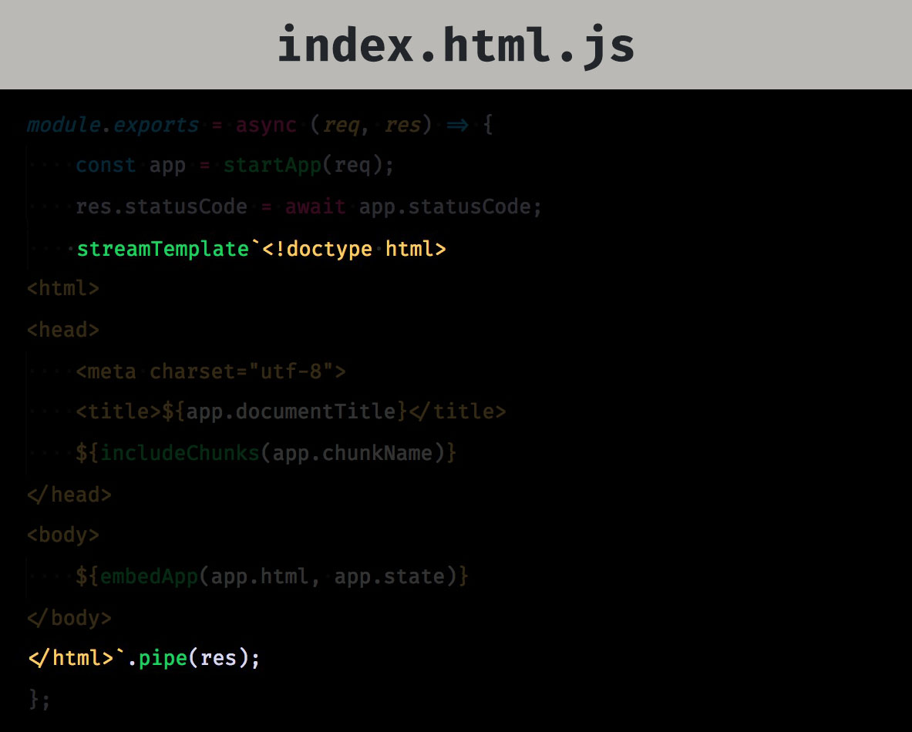 ??? - Then we use a npm package, stream-template, to create a tagged template string - stream-template returns a node stream --- <img src="assets/streaming-index-html-js-promises.jpg" width="800"> ??? - It resolves the given promises and sends parts of the template to the client as soon as they are final --- <img src="assets/network-with-streaming.jpg" width="1000"> ??? - The advantage of this approach becomes clearly visibile in the network tab - The client.js is already downloaded while the response is still being rendered on the server - If you're using code splitting, don't forget to also include additional chunks into the head --- layout: true class: slides-chapter, theme-spinach --- ## Further challenges --- layout: true class: slides-centered, theme-whiskey --- .slides-content[ ### Long-term caching Use the [`webpack-assets-manifest`](https://www.npmjs.com/package/webpack-assets-manifest) plugin to create a `manifest.json` that maps the source to dist filenames. ] --- .slides-content[ ### `POST`, `PUT`, `PATCH` and `DELETE` - Use `<form method="..." action="...">` - Use [`method-override`](https://www.npmjs.com/package/method-override) to allow other methods than `POST` - Listen for `submit` events on the `document` to handle on the client side - Your router needs to take care of these - Don't forget a [CSRF](https://www.owasp.org/index.php/Cross-Site_Request_Forgery_(CSRF) protection ] .slides-footnote[ Of course, you can also decide not to support other methods than `GET` on the server side. ] --- .slides-content[ ### `3xx`, `4xx` and `5xx` Both the server and the client entry need to take care of them. ] --- .slides-content[ ### Authentication - The server entry needs to forward received cookies to the client - **Make sure that you don't accidentally share cookies between different users** ] --- ### Things you should take a look at .slides-content[ - [Razzle](https://github.com/jaredpalmer/razzle) (framework agnostic) - [Next.js](https://nextjs.org/) (React) - [After.js](https://github.com/jaredpalmer/after.js) (React) - [Nuxt.js](https://nuxtjs.org/) (Vue.js) - [My master's thesis](https://johannesewald.de/research/universal-javascript-web-application-architecture.pdf) ] --- # Happy Hacking 🙌